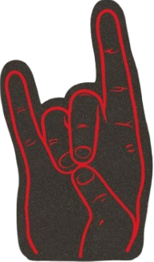

Unofficial Fan Archive
BABYMETAL
A fan-built information site for the Japanese metal phenomenon: the members, music, timeline, lore, and the personal experience of discovering the Fox God.

Live Ritual
Metal, dance, lights, and mythology.
A concert identity built to feel like a chapter from the Metalverse.

Global Recognition
From Japan to the biggest metal stages.
BABYMETAL meets METALLICA.

Metal Forth Era
Collaboration as a superpower.
The newest era connects BABYMETAL with artists across electronicore, deathcore, alt-pop, and global metal.
Biography
A band that made contradiction feel like a genre.
BABYMETAL formed in Japan in 2010 with a concept that sounded impossible on paper: idol-pop performance fused with heavy metal. The result became one of modern metal's most recognizable live identities, built around dramatic vocals, synchronized dance, heavy instrumentation, and the mythology of the Fox God.
Their current official lineup is SU-METAL, MOAMETAL, and MOMOMETAL. Together they carry the newer era of BABYMETAL, from the restored Metalverse into the global collaboration period represented by METAL FORTH.
Members
The three faces of the current Metalverse.
Click each profile to open a dedicated page with more information and photo space.


Sound Guide

What makes BABYMETAL different?
BABYMETAL's identity is contrast. Bright vocal hooks meet blast beats and low-tuned guitars. Dance formations move with metal breakdowns. Mythology turns concerts into chapters.
- Heavy riffs and melodic vocal leads
- Choreography treated as part of the music
- Live-band power from the Kami Band
- Fox God lore, dramatic visuals, and ceremonial stage language
Discography
Studio releases and major eras.
Album cards open into detail pages. Cover areas are placeholders so you can add your own selected artwork later.
BABYMETAL
The debut that defined the band's core fusion.
Metal Resistance
The international breakthrough and arena-metal expansion.
 2019
2019
Metal Galaxy
A worldwide journey through different metal and pop textures.
The Other One
A darker concept chapter tied to the restored Metalverse.
Metal Forth
The global collaboration era with MOMOMETAL official.
Current Happenings
What is happening in the Metalverse now.
Updated as an information block for fans following the newer BABYMETAL cycle.
Metal Forth Deluxe Edition
The deluxe edition expands the Metal Forth era with live tracks and remix material, keeping the 2025 album cycle active into 2026.
World Tour Activity
The official schedule lists 2026 dates across Japan, Europe, North America, and Latin America, including festival and arena appearances.
Anime Theme Collaboration
BABYMETAL collaborated with Tatsuya Kitani on "Kasuka na Hana", tied to the second season of Hell's Paradise.
Archive Notes
Fast facts for new fans.
What is kawaii metal?
A fusion of Japanese pop/idol performance and heavy metal, with BABYMETAL as its most famous example.
Who plays the instruments live?
The live instrumentation is performed by the Kami Band, a group of skilled backing musicians.
What is the Fox God?
The Fox God is part of BABYMETAL's theatrical lore, used to frame announcements, performances, and the band's mythic identity.
Records & Milestones
Why BABYMETAL matters beyond the gimmick.
These are the achievements that turned BABYMETAL from viral curiosity into a serious global metal act.
Billboard 200
Metal Forth debuted inside the Top 10 of the Billboard 200 in 2025, a historic U.S. chart moment for an all-Japanese group.
Top Rock Albums
Metal Galaxy made BABYMETAL the first Asian act to top Billboard's Top Rock Albums chart.
Wembley Arena
BABYMETAL became the first Japanese act to headline the venue and helped push Metal Resistance into record-setting UK territory.
Years Strong
From 2010 to the Metal Forth era, the group has kept evolving while protecting its core identity: metal, dance, mythology, and shock-bright melody.
History
The Metalverse timeline.
BABYMETAL x Philippines
The Manila connection.
A focused space for Filipino fans, local memories, and BABYMETAL's connection to the Philippine metal audience.
PULP Summer Slam XVIII: Of Good and Evil
BABYMETAL appeared on the PULP Summer Slam 2018 lineup in Manila, placing them directly in front of one of Southeast Asia's loudest metal communities.
Why it matters
For many Filipino fans, festival exposure matters because it connects BABYMETAL to the same scene that supports metal, rock, and alternative acts across Metro Manila.
Fan archive idea
Add your ticket photo, crowd memory, favorite local reaction video, or a short paragraph about what BABYMETAL means to Filipino fans.
Personal Experience
My BABYMETAL story.
This section is ready for your own photos, memories, concert notes, favorite songs, or how you discovered the band.
How I Found BABYMETAL
Write your discovery story here: the first song, the first performance video, the moment it clicked, or why the mix of metal and idol performance stood out to you.

Favorite Era
Add your favorite album era, member moments, live clips, merch memories, or playlist recommendations.